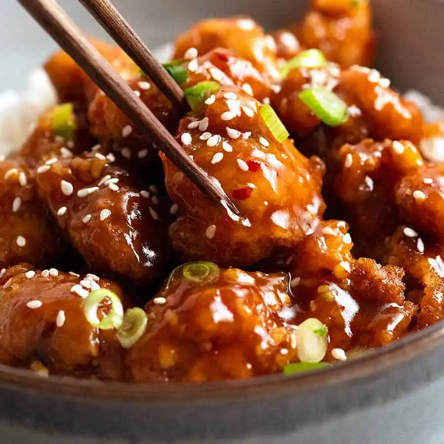

General Tso’s Chicken
General Tso’s Chicken is that perfect combination of sweet, savoury, spicy and tangy with crispy Chinese chicken bites. It’s a Chinese takeout favourite that just pushes all the right buttons!
General Tso's Chicken
- Prep: 15 mins
- Cook: 10 mins
- Mains, Stir Fries
- American Chinese, Chinese
Ingredients
Sauce/Chicken Marinade:
- 3 tbsp soy sauce - light or all-purpose (NOT dark soy)
- 1 tbsp hoisin sauce
- 1 tbsp rice vinegar (sub white wine vinegar)
- 2 tsp chilli paste , any (Sambal Oelak is great)
- 1 tsp sesame oil (toasted preferably)
- 3 tbsp brown sugar
- 1 tbsp cornflour/cornstarch
- 3/4 cup chicken stock/broth (low sodium)
Chicken:
- 600g/ 1.4 lb chicken thighs , boneless skinless, cut into 2.5cm / 1" pieces
- 1 tsp ginger , finely grated
- 1 tsp garlic ,finely grated
- 1 cup cornflour/cornstarch
- 1 - 4 cups oil, for frying (peanut, vegetable or canola;)
Stir Fry Sauce:
- 2 tbsp oil (peanut, vegetable or canola)
- 2 tbsp oil (peanut, vegetable or canola)
- 2 cloves garlic , finely chopped
- 1/2 teaspoon red chilli flakes (red pepper flakes)
Garnishes (at least 1 recommended):
- Finely sliced green onion
- Sesame seeds
Instructions
- Sauce-Marinade:Mix the soy, hoisin, vinegar, chilli and sesame oil.
- Marinate Chicken: Take out 2 tablespoons of Sauce-Marinade and mix with chicken. Add ginger and garlic to chicken, mix, then marinate 30 minutes.
- Dust chicken:Add cornflour into chicken and toss to coat, ensuring pieces are separated so they get fully coated.
- Shake off excess:Tip into a colander and shake to remove excess cornflour (or grab handfuls, shake so cornflour falls through your fingers).
- Finish Sauce:To the remaining Sauce-Marinade (that you made in Step 1), add sugar and cornflour. Mix, then add chicken stock and mix.
- Heat oil: Heat 2 cm / 4/5" oil in a deep skillet (or large pot - whatever you’re comfortable with) to 200°C/390°F. To use less, see Note 4.
- Fry:Cook chicken 3 minutes, turning halfway, until golden and crispy. Drain on paper towel lined plate.
- New / clean skillet:Discard oil, wipe skillet and return to heat. Or use another large skillet.
- Stir Fry Sauce:Heat oil in a large skillet over medium heat. Add garlic, ginger, chilli flakes, saute 30 seconds until garlic is light golden. Add Sauce, bring to simmer and stir occasionally until it thickens enough that you can draw a path across pan base.
- Toss!Add chicken, toss to coat quickly - the quicker you are, the crispier the chicken stays! Transfer to serving plate, garnish and serve immediately with your rice of choice.
Nutrition Information:
- Calories: 465cal (23%)
- Carbohydrates: 22g (7%)
- Protein: 32g (64%)
- Fat: 28g (43%)
- Saturated Fat: 14g (88%)
- Iron: 2mg (11%)
- Calcium: 26mg (3%)
- Cholesterol:143mg (48%)
- Sodium: 974mg (42%)
- Potassium: 446mg (13%)
- Fiber: 1g (4%)
- Sugar: 10g (11%)
- Vitamin A: 110IU (2%)
- Vitamin C: 1mg (1%)
Home